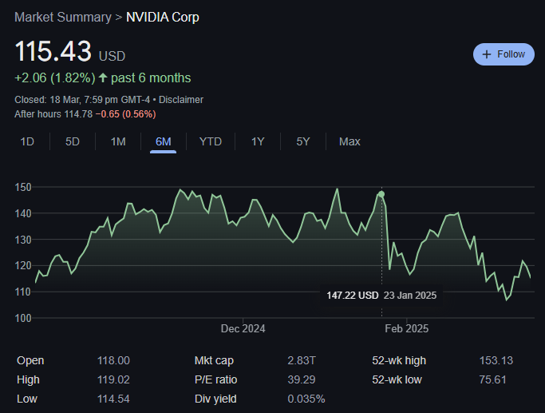

## DeepSeek
## What's all the fuss about?
Express Tour

[github.com/thushan](https://github.com/thushan)
There's more to the story

Couple of months earlier...
Who are DeepSeek?
- Founded 2016 by Liang Wengfeng (1985)
- Privately owned & funded by High-Flyer ($8B HF)
- ~160-180 Employees (as of early-2025)
- Hires for ability over experience - graduates, PhDs
- Meritocratic culture - creativity, passion & collabs
- LLMs: DeepSeek Coder (2023), DeepSeek v2 (2024)
- 2019 established AI Trading algorithms (Fire-Flyer)
- 2022 Fire-Flyer 2 (5000 A100 GPUs)
- Focused on R&D into LLMs, no commercialisation
- That avoids China's Gov AI Controls & Regulations
What makes them special?
- Priortise efficiency & cost-effectiveness
- Innovations in architecture & approach
- MIT License - the most open & permissive
- Extensive Papers with each release:
- DeepSeek Coder (November 2, 2023)
- DeepSeek-LLM series (November 29, 2023)
- DeepSeek-MoE models (January 9, 2024)
- DeepSeek-Math models (April 2024)
- DeepSeek-V2 (May 2024)
- DeepSeek-Coder V2 series (June 2024)
- DeepSeek V2.5 (September 2024, updated in December)
- DeepSeek-R1-Lite-Preview (November 20, 2024)
- DeepSeek-V3-Base and DeepSeek-V3 (December 2024) **
- DeepSeek-R1 (January 20, 2025) *
How do they compare?
| Feature |
DeepSeek R1 |
OpenAI o1 |
Claude 3.7 Son |
Llama 3.3 |
| License |
MIT OSS |
Proprietary |
Proprietary |
OSS (Non-Commercial) |
| Architecture |
Mixture of Experts (MoE) |
Transformer-based |
Transformer-based |
Transformer-based |
| Parameters |
671B (37B act) |
Not disclosed |
Not disclosed |
405B |
| Cost |
~$5.6M |
$100M+ (est) |
Not disclosed |
Not disclosed |
Context |
128K tokens |
100K tokens |
200K tokens |
Not disclosed |
| Strengths |
- Cost-efficiency
- Reasoning
|
|
|
- Multilingual (8)
- Zero-shot Tuned
|
DeepSeek v3
- Released December 26, 2024
- 617B MoE Architecture - uses 37B per query
- Heavily optimised for Code
- Foundations built for Reasoning
- chat.deepseek.com - no limits, subscriptions
- Very competitive API rates:
- $0.27/MT (cache miss)
- $0.07/MT (cache hit)
- $1.10/MT Output
DeepSeek R1
- Released January 20, 2025
- First MIT/OSS Reasoning Model
- 32B, 70B models on par with OpenAI o1-mini
- Heavily optimised for Code & Math
- Reinforcement Learning Approach
DeepSeek Requirements
- 671B can run on 1.5TB of RAM
- vs LLama 70B needs 40-150GB of VRAM
- Demonstrated LLMs on commodity hardware
- You don't even need GPU + lots of VRAM
- Performs slower, but with
exa + GPUs flies
DeepSeek Technologies
- MoE: Mixture of Experts
- MLA: Multi-Head Latent Attention
- Reinforcement Learning
All backed with papers from R&D (arXiv)
Engineered to run on non-GPU hardware
Custom Silicon for MoE Computation
MoE? Moe Szyslak?
Not quite, but it's a bar for experts
MoE: Mixture of Experts
- Activates '37B expert' neurons (of 671B)per query
- Imagine a library with 671B books (full dense model)
- If you ask a question, instead of looking through 607B books...
- ...only the most relevant 37B books to answer are activated
MoE: Mixture of Experts
- DeepSeek solved the 'expert collapse' problem where models tend to overuse certain experts while ignoring others
- Introduced dynamic bias terms for expert routing and separating experts into shared and routed categories
- 3x faster than GPT-4 at ~1/20th the training cost ($6M vs $100M)
They've done studies you know...
It's also illegal in 9 countries... maybe.
MoE: Examples
- Google Gemni 1.5
- Mistral Mixtral 8x7B
- DeepSeek v3 (671B Model, 37B activations)
- Google GLaM (1.2T Model, 97B activations)
- Google T5 MoE (1.2T Model, Adaptive expert activations)
Dense Models: Examples
- OpenAI GPT-4, GPT-3 (175B)
- Anthropic Claude 3 Opus
- Meta Llama 2, Llama 3
- Mistral 7B
Dense models provide stable quality
...but costly in compute, uses all params.
Optimised Activations
- What if my query only needs 10B Params?
- MoE (DeepSeek v3): Still activates 37B irrespective
- Dense (GPT-3): Still activates 175B regardless
- Dynamic Routing: a more efficient MoE, dynamically selects activations based on query
- Super complex to implement & get right, often only for T's of params
- Like Google - GShard (2020), GLaM (2021), T5 Moe (2022) or OpenMoe (2023)
Multi-Head Latent Attention (MLA)
- Introduced in DeepSeek v2
- Compresses KV Matrices into latent vectors
- Can reduce ~92-95% in memory usage bottlenecks
- Allows longer context-windows (128K for instance)
- KV Cache is usually a rolling buffer, inference side
Reinforcement Learning
- Trains models through trial-and-error, rewarding correct reasoning steps and answers
- Reduces reliance on large labeled datasets, addressing data privacy and bias concerns
- Enables autonomous development of chain-of-thought reasoning and self-verification
- Uses Group Relative Policy Optimisation for efficient training without a separate critic model
- Allows models to adapt and refine strategies, leading to improved problem-solving abilities
Some Lols & OMG were had
- DeepSeek sometimes said it was GPT4, sometimes LLama 3 - Identity Confusion
- DeepSeek R1 when thinking about inappropriate language/words would explore similar tone before refusing to answer.
- DeepSeek was touchy on topics (Tiananmen Square/Taiwan) & realtime censoring in R1
Some Security Concerns
- 100% attack success rate in security tests
- Susceptible to 'Evil Jailbreak' method
- Capable of generating harmful content and malicious code
- Australia Banned the use of DeepSeek (hosted)
- UK Gov advised against it for spreading misinformation
- Hosted DeepSeek kept user behaviour/data in an open ClickHouse Instance
- Hosted DeepSeek may divulge data to Chinese agencies required by law
What's the future
BYD + others & DeepSeek for autonomous driving
What's the future
- Cloud vendors adopt V3 and R1 - Azure / AWS
- Perplexity switched to R1 & saved ~96% costs
- Microsoft ported (distilled) Models to CoPilot+ PCs
- Both AMD & NVIDIA are optimising hardware to run DeepSeek models
- DeepSeek v3.5 (2026) & DeepSeek R2 (2027) in the works
How to play with DeepSeek?